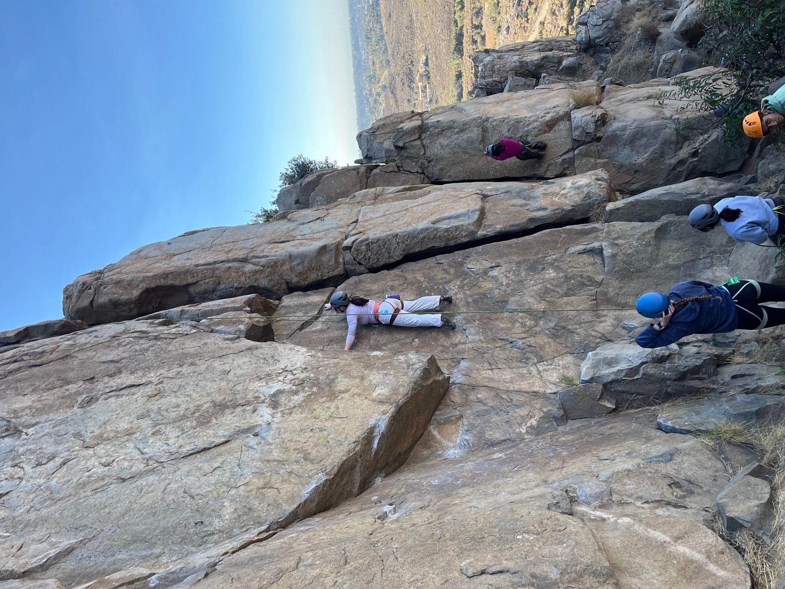

Hi! I am Grace and I am a second year data science major at UCSD. I am from San Diego, but was born in Illinois and love living here. In my free time I enjoy dancing, climbing, running, surfing, etc! I hope to improve my web development and visualization skills in this class!
